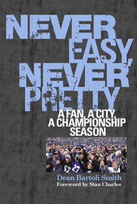

<body bgcolor="#FFFFFF" text="#000000" link="#0000FF" vlink="#CC0000" alink="#CC0000"><center><hr width="350" size="1" align="center" noshade>The story of the Baltimore Ravens, Super Bowl XLVII Champions, as told through the cultural lens of a city with a rich football history<hr width="350" size="1" align="center" noshade><p><a href="https://cdcshoppingcart.uchicago.edu/Cart/ChicagoBook.aspx?ISBN=9781439911068&&PRESS=temple" target="_top">Buy this book!</a> | <a href="https://cdcshoppingcart.uchicago.edu/Cart/Cart.aspx?PRESS=temple" target="_top">View Cart</a> | <a href="https://cdcshoppingcart.uchicago.edu/Cart/Cart.aspx?PRESS=temple" target="_top">Check Out</a></p><p></p></center><!--none//--><h1>Never Easy, Never Pretty</h1>
<H2>A Fan, A City, A Championship Season</H2>
<H2>Foreword by Stan Charles<br>
Features photographs taken by long-time Ravens photographer Phil Hoffmann</H2>
<h3>Dean Bartoli Smith</h3>
<P>cloth 1-4399-1106-1 $25.50, Aug 13, <FONT COLOR=#990033>Available</FONT>
<br>Electronic Book 1-4399-1108-8 $25.50 <FONT COLOR=#990033>Available</FONT>
<BR> 224 pp
6x9
</P><BLOCKQUOTE><I>"I loved this book. I couldn't put it down. Beautifully written, it�s a must-read for Ravens fans! We all know the outcome and I still couldn't wait to read the next chapter. You'll have to read it to prove that it really happened! The most important plays are thoroughly detailed, giving that scary, anxious rush that we had most Sundays."</I>
<br>&#151<b>Vince Bagli</b>, retired Baltimore Colts announcer and sportscaster</I></BLOCKQUOTE>
<P>When the Ravens won Super Bowl XLVII in New Orleans, it was a joyous moment for fans and team alike. For Dean Bartoli Smith, a lifelong Baltimore football fan and writer for <I>The Baltimore Brew</I> and <I>Press Box</I>, it was especially sweet. In <I>Never Easy, Never Pretty</I>, he recalls the ups and downs and ultimate thrills of a special season while also showing how a football team impacts its fans and its city. Smith recounts the season from start to glorious finish while interweaving Baltimore�s professional football history, telling his own story of growing up with the Colts, then gradually transferring adult loyalties to the new team in town, the Ravens. Family, friends, and other fans share their recollections, too, letting us see how a football team becomes part of a community.
<P>Smith�s game-by-game recounting of an improbable season brings back all the excitement and uncertainty as the team starts strong, wobbles, then finds its inspiration and character in the playoffs. For each game <I>Never Easy, Never Pretty</I> features a diverse array of quotes, interviews, and commentary from players, broadcasters, and executives, including Joe Flacco, Ray Lewis, Art Donovan, Kevin Byrne, Steve Bisciotti, and Ozzie Newsome.
<P><I>Never Easy, Never Pretty</I> highlights the Ravens� electrifying season and celebrates a team, a city, and its emotional landscape during an unlikely run to a Super Bowl victory. The result is an insightful and poignant book about much more than a championship season.
<p><i>Never Easy, Never Pretty</i> includes:
<ul><li><p>The 4th & 29 play by Ray Rice against the Chargers
<li><p>The game-saving first down
<li><p>The 70-yard bomb from Joe Flacco to Jacoby Jones known as the �Mile High Miracle�
<li><p>Interviews with Rob Burnett, Keith Mills, Lenny Moore, Sean Landeta, Terrell Suggs, Tom Matte, and many others</ul>
<BR>&nbsp;<h2>Excerpt</h2><P>Excerpt available at <a href="http://www.temple.edu/tempress">www.temple.edu/tempress</a></p>
<BR>&nbsp;<h2>Reviews</h2>
<p><I>"Dean Bartoli Smith's </I>Never Easy, Never Pretty<I> will help satisfy the hunger of so many Baltimore Ravens fans wishing to re-live the club's remarkable 2012 title year. It's a virtual play-by-play re-enactment. But, more than that, it's about the long love affair that's consumed so many in Baltimore, which commenced with a team called the Colts and continues, strong as ever, with the beloved Ravens."</I> <br>&#151<b>Michael Olesker</b>, author of <I>The Colts' Baltimore: A City and Its Love Affair in the Fifties</I>
<p><i>"</i>Never Easy, Never Pretty<i> reaffirms why loving a sports team like the Ravens is so important. It is an entertaining account of an incredible season written by a fan for the fans. Smith celebrates the resilience of a team, the passion of its fans, and the character of our city."</I>
<br>&#151<b>Keith Mills</b>, Sports Commentator, WBAL
<p><i>"You will get a kick out of reading </i>Never Easy, Never Pretty<i>�especially if you were a fan of the Baltimore Colts in the late 1960s and 1970s."</I>
<br>&#151<b>Art Donovan</b>, Baltimore Colts Hall of Fame Defensive Tackle
<p><i>"</i>Never Easy, Never Pretty<i> offers a refreshing fan�s eye view as if you are sitting at Memorial or M&T Bank Stadiums discussing the heritage of the Colts and the Ravens with fellow fans. The book will leave a legacy for future generations to understand the crossover between the Colts and Ravens�showing that Baltimore always was, and still is, a great football town."</I>
<br>&#151<b>John Ziemann</b>, President, The Marching Ravens Band
<p><I>"As the subtitle indicates, this book is a fan's memoir, the view of a championship season from outside the team.... [Smith] recounts the Ravens' championship 2012 season in light of his personal background and the history of pro football in the intimate small market of 'Charm City.'... VERDICT: This is heartfelt writing."</I>
<br>&#151<b><I>Library Journal</I></b>
<p><I>""[I]f you're interested in analysis from a longtime sports fan capable of not only recounting the ups and downs and ups of the 2012 season but also understanding why they fuel this city's purple passion, you won't be disappointed. In recapping last season's many dramas, Smith doesn't simply view them as isolated events leading to a Super Bowl--he sees them as chapters in an urban mythology dating back to football's Paleozoic era, the 1950s."</I><br>&#151<b><I>Baltimore Magazine</I></b>
<BR>&nbsp;<h2>Contents</h2><P>
<p>Foreword by Stan Charles
<br>
<br>Introduction
<br>
<br>1. No Huddle, No Defense
<br>2. Never Easy, Never Pretty
<br>3. A Good Old-Fashioned Texas Ass Kicking
<br>4. Fourth and 29
<br>5. Under Fire
<br>6. A Giant Win
<br>7. Blue Horseshoes
<br>8. The Mile High Miracle
<br>9. Finish It
<br>10. One Play
<br>
<br>Acknowledgments
<br>Credits for Epigraphs and Photographs
<br>Media Sources
</P><BR>&nbsp;<H2>About the Author(s)</H2>
<table><tr><td valign="top"><img src="/tempress/authors/2313_au.gif" height="90" width="75"></td><td width="100%" valign="middle"><p><b>Dean Bartoli Smith</b> covers the Baltimore Ravens and the Orioles for <i>The Baltimore Brew</i>. His sportswriting has appeared in <i>Press Box</i>, <i>Fan Magazine</i>, <i>Baltimore City Paper</i>, and on the websites Patch.com and the Midnight Mind Review. He is the director of Project MUSE at Johns Hopkins University, and the author of <i>American Boy</i>, a volume of poetry.</P></td></tr></table>
<BR><H2>Subject Categories</H2>
<p><A HREF="/tempress/sports.html" TARGET="_top">Sports</a>
<BR><A HREF="/tempress/general.html" TARGET="_top">General Interest</a>
</p>
<p align="center"><a href="https://cdcshoppingcart.uchicago.edu/Cart/ChicagoBook.aspx?ISBN=9781439911068&&PRESS=temple" target="_top">Buy this book!</a> | <a href="https://cdcshoppingcart.uchicago.edu/Cart/Cart.aspx?PRESS=temple" target="_top">View Cart</a> | <a href="https://cdcshoppingcart.uchicago.edu/Cart/Cart.aspx?PRESS=temple" target="_top">Check Out</a></p><p><font face="Arial" size="1"><a href="copyright.html" onMouseOver="window.status='Web Copyright Policy';return true;" onMouseOut="window.status=''" title="Web Copyright Policy">&copy;</a> 2015 <a href="http://www.temple.edu" target="new" onMouseOver="window.status='Link to Temple University home page';return true;" onMouseOut="window.status=''" title="Link to Temple University home page">Temple University</a>. All Rights Reserved. http://www.temple.edu/tempress/titles/2313_reg.html</font></p>